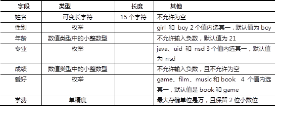

参考答案
主流数据库服务软件有：
开源且跨平台的数据库软件有：
参考答案
服务进程名是mysqld；监听端口是3306；默认数据库目录为 /var/lib/mysql。
参考答案
3个默认库：mysql、test 和 information_schema。
其中，information_schema库的数据不占用磁盘空间，仅保存在内存里。
参考答案
MySQL常用的数据类型：
参考答案
表-1 stu_info表结构
参考答案
mysql> create database studentdb;
mysql> mysql> create table studentdb.stu_info(
-> name varchar(15) not null,
-> sex enum("boy","girl") default "boy",
-> age tinyint unsigned default 21,
-> pro enum("java","uid","nsd") default "nsd",
-> result tinyint unsigned not null,
-> likes set("game","film","music","book","book")default "game,book",
-> tuition float(7,2)
-> );